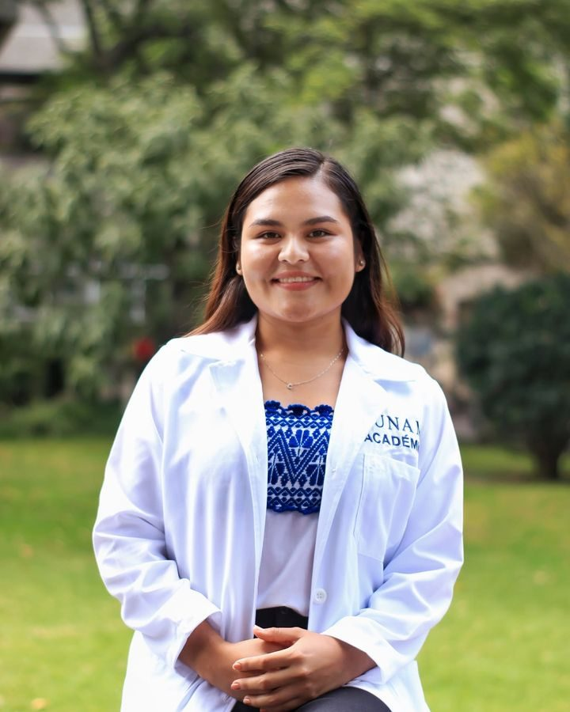

Psicología para vivir con una enfermedad crónica, o acompañar a quien la vive.
Soy Centy Ruiz, psicóloga clínica y de la salud. También acompaño la ansiedad, la depresión y los momentos difíciles, a adultos y adolescentes, de forma presencial o en línea.
- Terapia cognitivo-conductual
- Maestría, UNAM
- Medicina conductual
- Presencial y en línea

Con qué puedo acompañarte
Cada proceso se adapta a ti. Trabajo con herramientas basadas en evidencia y un trato cercano y amable.
Enfermedades crónicas
Es mi especialidad. Acompaño a personas que viven con una enfermedad crónica en lo que el diagnóstico y el tratamiento mueven por dentro.
- Adherencia al tratamiento
- Ansiedad ante cirugías
- Depresión y ansiedad por la enfermedad
- Adaptación al diagnóstico
También acompaño
Estrés en cuidadores
Cuidar a alguien también desgasta. Un espacio para ti, con estrategias para sostener tu propio bienestar.
Ansiedad
Preocupación constante, tensión, miedo o dificultad para relajarte. Aprendemos a entender tu ansiedad y a manejarla.
Depresión
Tristeza persistente, cansancio o pérdida de interés. Trabajamos paso a paso para recuperar energía y sentido.
Orientación a adolescentes
Acompañamiento para jóvenes que atraviesan cambios, presión o emociones difíciles de nombrar.
Talleres
Actividades grupales sobre salud emocional para instituciones, equipos y comunidades. Escríbeme para conocer los temas disponibles.
Sobre mí
Soy psicóloga clínica y de la salud. Mi práctica combina la atención privada con la investigación sobre enfermedades crónicas, por lo que me mantengo en constante actualización mediante cursos y congresos.
Creo en un acompañamiento cercano, amable y comprometido: tú participas activamente en tu proceso y yo te doy las herramientas para avanzar.
- Formación: Licenciatura y Maestría en Psicología, Universidad Nacional Autónoma de México
- Residencia: Medicina Conductual, Hospital General de Atizapán, servicio de medicina interna
- Trabajo en equipo: colaboración con equipos multi e interdisciplinarios para el bienestar de pacientes con enfermedades crónicas
- Investigación: grupo de investigación sobre enfermedades crónicas, FES Iztacala, UNAM
- Divulgación: publicaciones en revistas con factor de impacto y ponencias en congresos nacionales e internacionales
Lo que dicen quienes han trabajado conmigo
Testimonios compartidos de forma anónima, con la autorización de cada persona, a partir de mi encuesta de satisfacción.
“Me sentí escuchada y acompañada. Aunque algunas sesiones fueron dolorosas, la psicóloga siempre manejó muy bien cada escenario para guiarme al objetivo.”
Consultante
“Me enseñaron herramientas no solo para el motivo de consulta, sino para mi vida diaria, y me hicieron priorizar mi salud mental.”
Consultante
“La psicóloga creó un ambiente en el que me sentí escuchado, comprendido, respetado y seguro.”
Consultante
Resultados de una encuesta de satisfacción respondida por 18 consultantes. La experiencia de cada persona es distinta.
Preguntas frecuentes
¿Qué es la terapia cognitivo-conductual?
Es un enfoque con respaldo científico que trabaja la relación entre lo que piensas, lo que sientes y lo que haces, para que puedas cambiar los patrones que te generan malestar.
¿Atiendes en línea o presencial?
Ambas. Puedes elegir la modalidad que te resulte más cómoda cuando agendes tu cita.
¿A quién atiendes?
A adultos y adolescentes. Me especializo en personas con enfermedades crónicas y en cuidadores, pero también atiendo ansiedad, depresión y situaciones de vida difíciles.
¿Cómo agendo una cita?
Escríbeme por WhatsApp, cuéntame brevemente qué te trae y acordamos un horario dentro de mi horario de atención.
¿Lo que hablamos en consulta es confidencial?
Sí. Lo que compartes en consulta está protegido por el secreto profesional, con las excepciones que establece la ley, que te explico al comenzar.
Dar el primer paso ya es avanzar
Escríbeme y platicamos sobre lo que necesitas. También puedes preguntarme por talleres.
WhatsApp · 954 207 0965Correo: centeotlruiz03@gmail.com
Horario de atención
- Lunes a viernes10:00 a 12:00 h
15:00 a 19:00 h - ModalidadPresencial y en línea